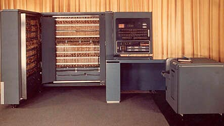
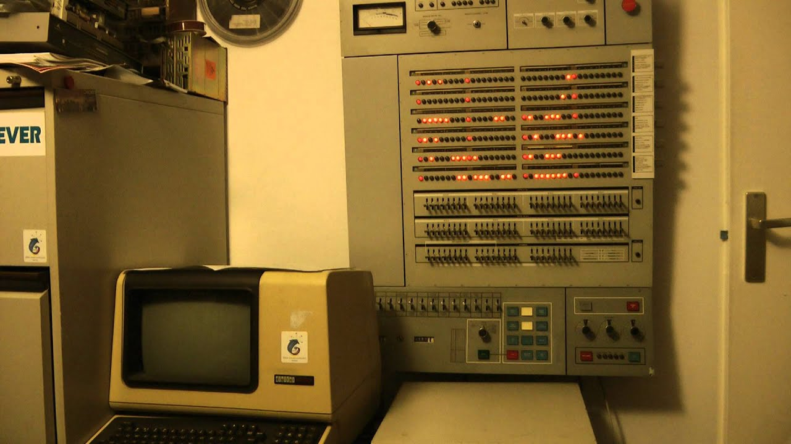
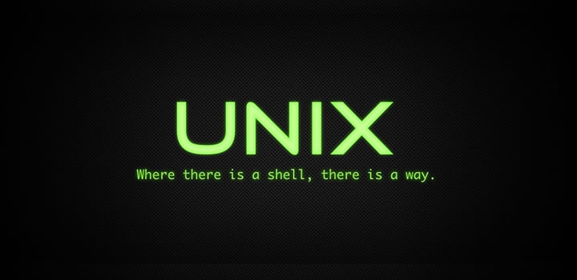
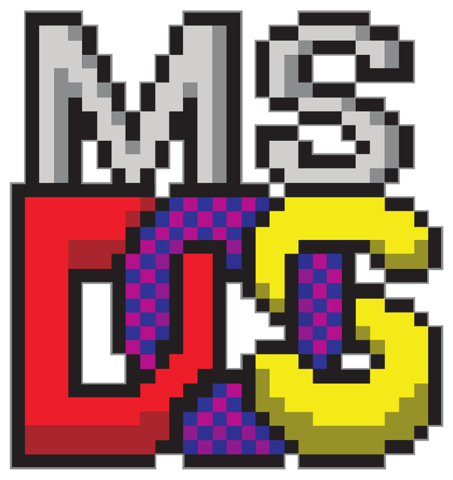
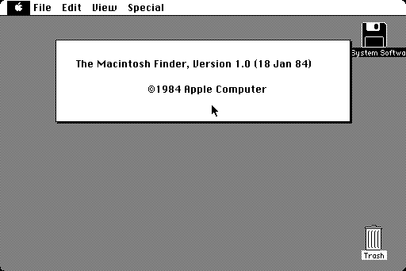
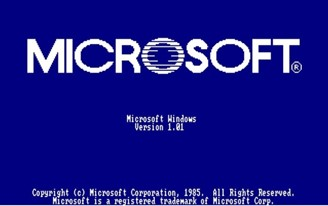
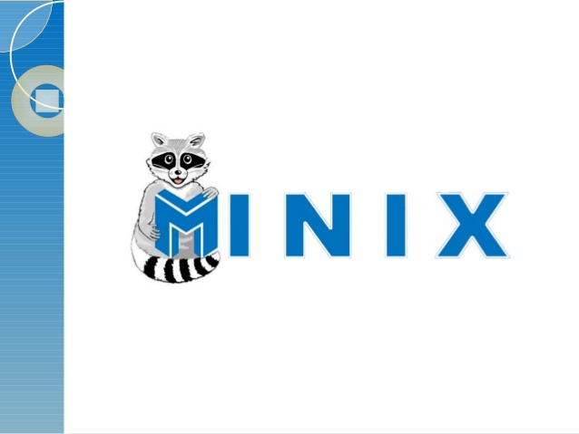
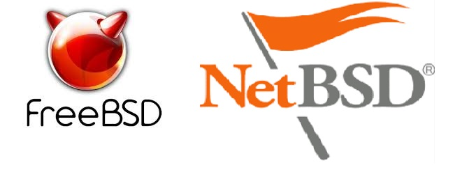
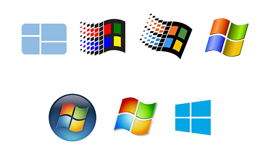

Decada de 40
Cada programa executava sozinho e tinha total controle do computador. Tudo devia ser programado
detalhadamente pelo desenvolvedor, desde a carga do programa em memória, varredura dos periféricos de
entrada para busca de dados, a computação propriamente dita e o envio dos resultados para os periféricos
de saída.

Decada de 50
O conceito de sistema operacional apareceu durante a segunda geração da computação moderna (1955 –
1965), desenvolvido pela GM Laboratories para o computador IBM 701 através da programação em Batch que
utilizava cartões perfurados e depois fitas magnéticas.

Decada de 60
o grupo do pesquisador Fernando Corbató, do MIT, anuncia o desenvolvimento do CTSS – Compatible
Time-Sharing System, o primeiro sistema operacional que possuía compartilhamento de tempo.
a IBM lança o OS/360, um sistema operacional avançado, com compartilhamento de tempo e excelente
suporte a discos.
um projeto conjunto entre MIT, GE e Bell Labs define o sistema operacional Multics, cujas ideias
inovadoras irão influenciar novos sistemas durante décadas.

Ano 1969
Ken Thompson e Dennis Ritchie, pesquisadores dos Bell Labs, criam a primeira versão do UNIX.

Ano 1981
A Microsoft lança o MS-DOS, um sistema operacional comprado da empresa Seattle Computer Products em
1980.

Ano 1984
a Apple lança o sistema operacional Macintosh OS 1.0, o primeiro a ter uma interface gráfica totalmente
incorporada ao sistema.

Ano 1985
primeira tentativa da Microsoft no campo dos sistemas operacionais com interface gráfica, através do
MS-Windows 1.0.

Ano 1987
Andrew Tanenbaum, um professor de computação holandês, desenvolve um sistema operacional didático
simplificado, mas respeitando a API do UNIX, que foi batizado como Minix.
IBM e Microsoft apresentam a primeira versão do OS/2, um sistema multitarefa destinado a substituir o
MS-DOS e o Windows. Mais tarde, as duas empresas rompem a parceria; a IBM continua no OS/2 e a Microsoft
investe no ambiente Windows.

Década de 90
Linus Torvalds, um estudante de graduação Finlandês, inicia o desenvolvimento do Linux, lançando na
rede Usenet o núcleo 0.01, logo abraçado por centenas de programadores ao redor do mundo.
A Microsoft lança o Windows NT, o primeiro sistema 32 bits da empresa.
Lançamento dos UNIX de código aberto FreeBSD e NetBSD.

Anos 2000
- 2001 – Apple lança o MacOS X, um sistema operacional derivado da família UNIX BSD.
- 2001 – Windows XP.
- 2004 – núcleo Linux 2.6.c
- 2006 – Windows Vista
- 2009 – Windows 7
- 2012 – Windows 8